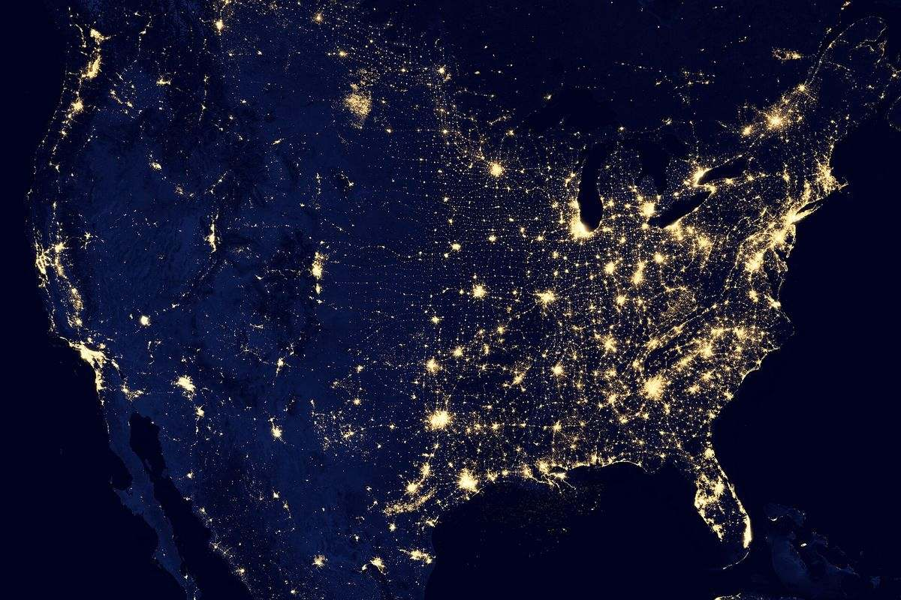
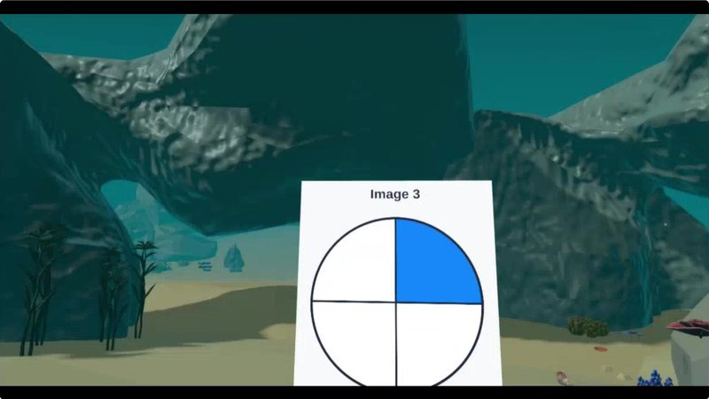

| Place | A gallery |
| Guide | Opti |
| Curator | You |


Build the Four-Part Exhibit
These are the models you will use. In VR, type the gray word in the Models search box to find each one.
One model for each part
In VR, this page is on the Canvas tab too.
Open the On-Demand app. Click Explore. Type Gallery in Filter environments. Click Optima Gallery, then Begin Solo.
Find an open wall or corner in the gallery. Make 4 spots in a row: map, source, community, virtue.
Put the globe and compass rose in the map spot, the quill in the source spot, the house in the community spot, and the Courage book in the virtue spot.
Open your menu, click Library, then Camera. Move the tablet until your whole diorama fits. Click Take photo.
Click the Canvas tab and pick 3.11.02 VR · Final Exhibit Diorama. Click Choose from My Files, pick your photo, click Use this file, then Submit to Canvas. Look for the green Submitted tag.
Press the Meta button, then click Quit. Check that your photo is in the Canvas assignment. Not there? Open Having trouble in VR?
🛟 Having trouble in VR?Steps with pictures, and a how-to video
These pictures come from other maps. Your map will be Optima Gallery, but the buttons are the same.
🖥️ First time only: connect Canvas (on your computer)

Go to xr.optimaed.com. Log in with your VR login.

Click Connect to Canvas. Log in to Canvas, then click Authorize. You will see Canvas connection completed.

Click Canvas on the left and pick our class. You only do this one time.
📄 Only if the assignment has a file

Open the assignment. Click Open in Canvas to download the file. Then click My Files and Upload File.
🥽 In the headset

Click Explore. Type the map name in Filter environments.

Click the map, then click Begin Solo.

Press the top button on your right controller. Click the Canvas tab and pick our assignment. Tip: point at a mint side grip and squeeze to pull the tablet to your hand.

Click Models. Type the gray word in the search box. Click a model to bring it out.

Grab a model with the palm trigger. Use both palm triggers to make it bigger or smaller.

Click Library, then Files. Pick your file to place it.

Click Library, then Camera. Move the tablet until your scene fits. Click Take photo.

Click the Canvas tab and pick our assignment. Click Choose from My Files, pick your newest photo, then Use this file.

Click Submit to Canvas. Look for the green Submitted tag. To leave, press the Meta button, then click Quit.
🔁 Didn’t work in VR? Two other ways

Go to xr.optimaed.com and click Canvas. Pick our assignment, click Choose from My Files, pick your photo and submit it.
Your photos and videos save to My Files at xr.optimaed.com. You can also download your photo there and upload it to the Canvas assignment yourself.
Build the Exhibit Panel